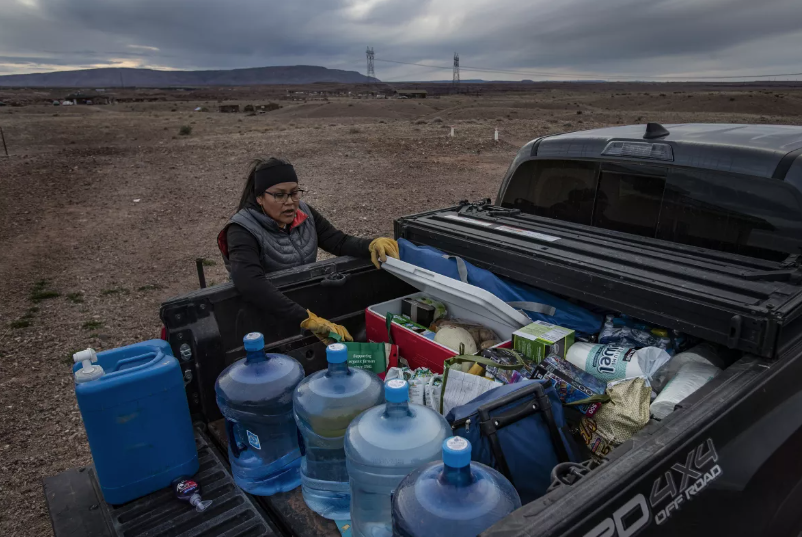

Outdated And Nonexistent Water Systems
Every American's right to water is protected by the state, but when the question comes to first americans this right seems to be ignored. Much of native American housing has one primary issue: there is either no water system or its outdated. Around 6% of native American housing lacks water systems meaning they need to find alternate sources of water, this can be expnsive or take up a lot of daily time. If housing does have water systems then they are likely to be outdated. This can mean that the water systems can be dangerous for human consumption meaning that they will still need to travel for their water. In comparson around 0.3% of houseing for nonindigenous people don't have water systems.
